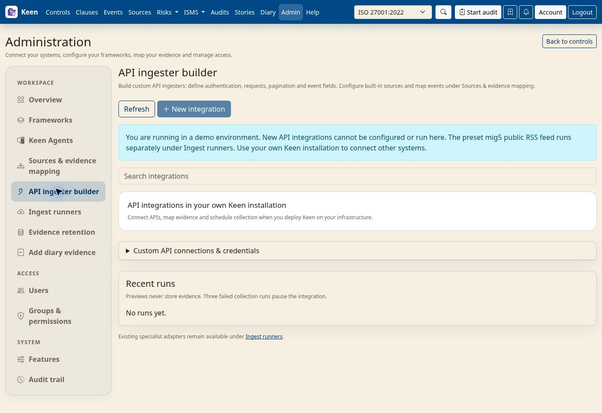

Administering Keen
Custom API ingesters
Chapter 31 of 37
Build a custom API ingester
When no built-in adapter collects from a service, the API ingester builder describes the HTTP requests itself: a connection, a request, the records to extract and the fields that make them events. No code is needed.


- Configure a custom connection with its base URL and supported authentication. Credentials are stored encrypted using
KEEN_INTEGRATION_SECRET_KEY; set this key consistently for API and workers and include it in protected backups. - Define the request path, query parameters, supported request payload and pagination settings. Start with a bounded page size and a small collection.
- Select the records to extract and configure their normalised event fields, including stable identity and timestamp information.
- Test the request, inspect the resulting event, then configure its collection schedule.
- Create an evidence mapping in Sources & evidence mapping and preview it against the collected events.
Outbound network restrictions, credential handling and request limits still apply, and a remote API's permissions and history determine the evidence available. Custom connection objects appear in the builder's credentials list; built-in sources have their own credential editor under sources & evidence mapping. Keep mapping rules focused on what the event demonstrates; the rules chapter explains revision management, YAML export and historical mapping.
Delete ingesters and connections
In the builder, choose Delete ingester on a card to remove one ingester, or Delete connection beside the saved connection to remove it and its ingesters. Connections can also be removed from sources & evidence mapping.
- Read the impact preview: the affected ingesters, the source-specific mapping rules and the number of automatic evidence-to-control links.
- Check that the selected item is the one you intend to remove, type its displayed name exactly, and confirm. Cancel keeps the configuration.
- Review the refreshed list. Collected events, evidence artefacts, measurements, manual and imported mappings, and shared cross-source rules remain available.
Going deeper: exactly what is removed and what blocks deletion
Deleting an ingester removes its saved revisions, queued jobs and run history, its source-specific rules and the automatic mappings for its events; its connection and sibling ingesters remain. Deleting a connection additionally removes its encrypted credentials and all ingesters attached to it, with their revisions and run history.
An active run must finish before deletion. If the configuration or mapping counts change after the preview, open a fresh preview and review the impact again. A connection referenced by another ingester's published revision stays protected until that ingester is republished using its replacement connection.